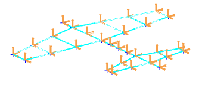

Generate the matching DOF set
You will generate a DOF set that matches the sensor configuration. You will then use this DOF set to modify the analysis solution to solve for the results that contain the reduced mass (Mr) matrix.
 Simulation Navigator
Simulation Navigator
-
 Sensors [30]
Sensors [30] -
 Generate Matching DOF Set
Generate Matching DOF Set -
 DOFSets (expand)
DOFSets (expand)
-
1 – Correlation 1 DOF Set
